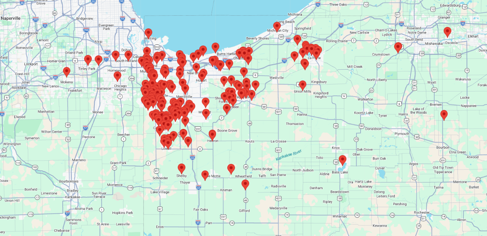

Live Inventory Tracking
Track sign panels, riders, and inventory with organized asset management.

Northwest Indiana
Professional sign installation, inventory management, and in-house printing powered by modern technology and proven systems.
The Infrastructure Difference
Every sign is part of a larger system. Pro Real Estate Signs combines professional field service, inventory management, in-house manufacturing, and technology-driven operations into one streamlined infrastructure designed for modern real estate brokerages.
Track sign panels, riders, and inventory with organized asset management.
Know where your active listings are located with live mapping technology.
Receive installation and removal photos as work is completed.
Reliable installation and service supported by proven systems and consistent procedures.
Services
From manufacturing to installation and ongoing inventory management, Pro Real Estate Signs provides a complete sign infrastructure solution for real estate professionals.
Professional installation throughout Northwest Indiana with instant photo confirmation after every completed installation.
Fast removal service with photo confirmation and complete tracking of every completed removal.
Agent panels, riders, commercial signage, replacement graphics, and professional graphic design.
Live inventory management with serialized panel tracking for complete asset visibility.
Large-format commercial real estate, land development, and roadside sign installation.
Rider changes, panel replacement, repairs, and ongoing maintenance to keep every sign looking professional.
Pro Real Estate Signs proudly serves Northwest Indiana as our core market, with regular service extending into neighboring Illinois counties and east to Mishawaka and surrounding communities. If your project falls outside our standard coverage area, contact us. We are happy to discuss your project and determine how we can help.

Why Brokerages Choose Pro
Every installation, removal, rider, panel, and inventory item is organized through one centralized platform, giving agents and brokerages complete visibility from listing to closing.
Ready to Modernize Your Sign Program?
Whether you're an individual agent or a multi-office brokerage, Pro Real Estate Signs provides one centralized platform for ordering, tracking, inventory management, and professional field service throughout Northwest Indiana and beyond.